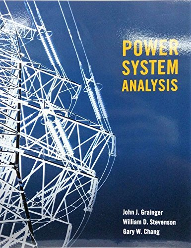
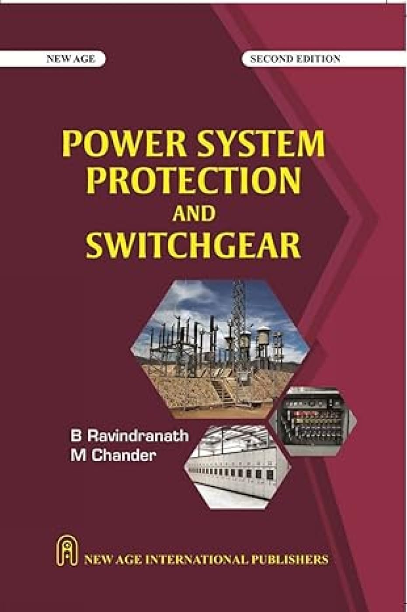
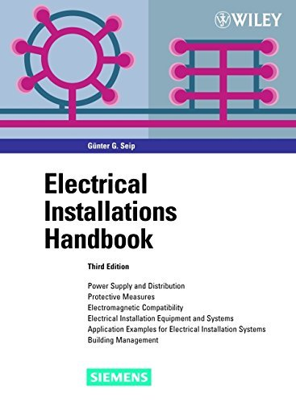
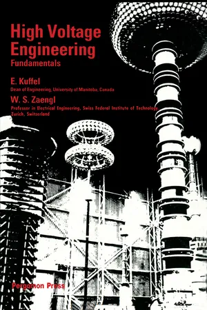
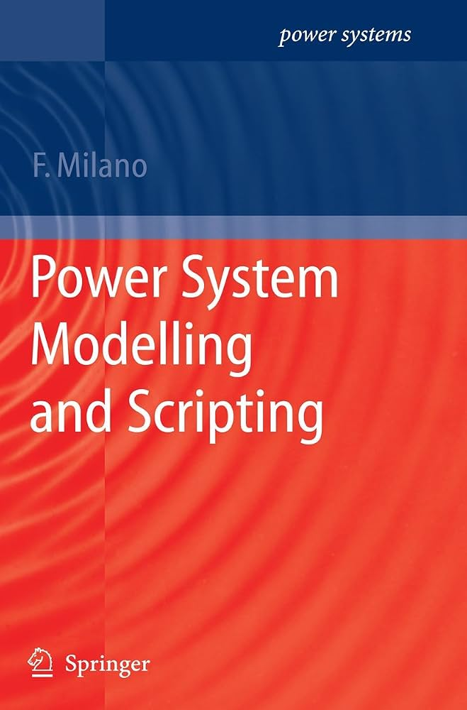
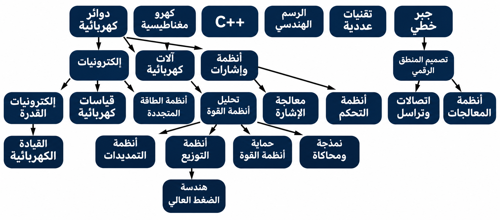

فرع من الهندسة يختص بدراسة الظواهر الكهربائية والمغناطيسية وتطبيقاتها في توليد الطاقة الكهربائية وتحويلها ونقلها وتوزيعها والتحكم فيها.
● ملخصات:
ملخص رنيم المغربي
● شروحات:
- وليد عيسى
- Tesla YU
● كتب:
1-Digital Design — M. Morris Mano, Michael D. Ciletti
2-Digital Systems: Principles and Applications — Ronald J. Tocci, Neal S. Widmer, Gregory L. Moss
3-Fundamentals of Digital Logic with Verilog Design — Stephen Brown, Zvonko Vranesic
● ملخصات:
● شروحات:
- My Communication Academy
● كتب:
1-Microwave Engineering — David M. Pozar
2-Microwave Devices and Circuits — Samuel Y. Liao
● ملخصات:
دفتر أحمد الشنطي
ملخص رنيم النغربي
● شروحات:
- ElCoM HU
- MBI
- Hashim EduTech
● كتب:
1-Digital Design — M. Morris Mano & Michael D. Ciletti
2-Fundamentals of Digital Logic with Verilog Design — Stephen Brown & Zvonko Vranesic
3-Digital Design and Computer Architecture — David Harris & Sarah Harris

● ملخصات:
● شروحات:
- MF Training & Consulting
- محمد عمر محفوظ البيك
● كتب:
1-Power System Analysis — Grainger & Stevenson
2-Power System Analysis and Design — Glover, Sarma & Overbye

● ملخصات:
● شروحات:
- Mohamed Dorbok
- Amr Salah
● كتب:
1-Power System Protection and Switchgear — Ravindranath & Chander
2-Protective Relaying: Principles and Applications — Blackburn & Domin

● ملخصات:
● شروحات:
- الكهرباء ببساطة
- MK-ELECTRICITY الطاقة الشمسية والكهرباء
● كتب:
1-Electrical Installation Handbook — Günter G. Seip
2-Electrical Wiring Residential — Mullin & Simmons

● ملخصات:
● شروحات:
- Mohamed Tayseer Mosa
- ZU EPE SOCIETY
● كتب:
1-High Voltage Engineering: Fundamentals — Kuffel, Zaengl & Kuffel
2-High Voltage Engineering — Naidu & Kamaraju

● ملخصات:
● شروحات:
- Mohamed Adel
● كتب:
1-Power System Modelling and Scripting — Federico Milano
2-Power System Analysis and Design — Glover et al.

